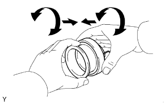

БЛОК СЦЕПЛЕНИЯ (для моделей с двигателем 1GR-FE) > ПРОВЕРКА |
| 1. ПРОВЕРЬТЕ ВЕДОМЫЙ ДИСК СЦЕПЛЕНИЯ В СБОРЕ |
С помощью штангенциркуля измерьте глубину заклепки.
 |
Измерьте биение ведомого диска сцепления индикатором часового типа.
| 2. ПРОВЕРЬТЕ КОЖУХ СЦЕПЛЕНИЯ В СБОРЕ |
С помощью штангенциркуля измерьте глубину и ширину изношенных участков диафрагменной пружины.
| Глубина | Ширина |
| 0,35 мм (0,0138 дюйма) | 5,0 мм (0,197 дюйма) |
| *a | Ширина |
| *b | Глубина |
| 3. ПРОВЕРЬТЕ МАХОВИК В СБОРЕ |
Проверьте биение маховика индикатором часового типа.
| 4. ПРОВЕРЬТЕ ПОДШИПНИК ВЫКЛЮЧЕНИЯ СЦЕПЛЕНИЯ В СБОРЕ |
|  |
Вращая скользящие части подшипника выключения сцепления (поверхности контакта с кожухом сцепления) и прикладывая усилие в осевом направлении, убедитесь, что подшипник выключения сцепления перемещается плавно, не оказывая чрезмерного сопротивления.
Проверьте подшипник выключения сцепления на повреждение и износ.
При необходимости замените подшипник выключения сцепления в сборе.
| 5. ПРОВЕРЬТЕ ПОДШИПНИК ПЕРВИЧНОГО ВАЛА |
Поверните подшипник рукой и убедитесь, что он вращается плавно.
Если подшипник застрял или вращается с трудом, замените подшипник первичного вала.
| 6. ЗАМЕНИТЕ ПОДШИПНИК ПЕРВИЧНОГО ВАЛА |
Снимите подшипник с помощью SST.
С помощью SST и молотка установите новый подшипник.